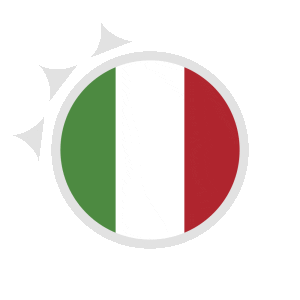

Włochy
Xmas w Włoszech
Włoske święta są znane pod nazwą "Natale" są okazją do obchodzenia różnorodnych tradycji religijnych i kulturowych. To czas, gdy rodziny zbierają się, aby celebrować te wyjątkowe dni w duchu radości, wspólnotowości i smacznego jedzenia.
8 Grudnia
Włoskie Boże Narodzenie rozpoczyna się 8 grudnia w dzień Matki Boskiej Niepokalanego Poczęcia, kiedy to wiele rodzin zaczyna dekorować domy i miejsca publiczne. Charakterystyczne są presepe, czyli szopki bożonarodzeniowe, które są wystawiane w domach, kościołach i placach. Również w tym czasie zaczynają się specjalne pokazy światełek i parady.
24 grudnia
Wigilia, to najważniejszy dzień. Kolacja wigilijna, zwana "Cena della Vigilia", składa się z wielu potraw. Tradycyjne dania obejmują ryby i owoce morza, jak bakalarz czy kalmary, a także różnorodne sałatki, makarony i desery, takie jak "panettone" czy "pandoro".
26 grudnia
Obchodzony jest "Giorno di Santo Stefano", dzień św. Szczepana, który jest dniem wolnym od pracy, a wielu Włochów wykorzystuje go na relaks z rodziną lub dalsze świąteczne obchody.
Tradycje
Włoskie tradycje świąteczne w okresie Bożego Narodzenia obejmują wiele elementów:
- Presepe (Szopka bożonarodzeniowa)- miniatury krajobrazów związanych z narodzeniem Jezusa, które są tworzone i eksponowane w domach, kościołach i na placach publicznych.
- Cena della Vigilia (Kolacja Wigilijna) - kolacja na której podawane są tradycyjne potrawy, głównie składające się z owoców morza, serwowane są również różne rodzaje makaronów, sałatki i desery.
- Messa di Mezzanotte (Pasterka)- ważnym wydarzeniem religijnym dla wielu Włochów. Ludzie udają się do kościołów, aby uczestniczyć w specjalnych mszach świątecznych, które odbywają się w nocy 24 grudnia.
- Scambio dei Regali (Wymiana Prezentów)- rodziny zbierają się, aby wymieniać prezenty. Pod choinką umieszcza się prezenty, które są otwierane wieczorem lub następnego dnia rano, 25 grudnia.
- Giorno di Santo Stefano (Dzień św. Szczepana)- dzień św. Szczepana, to kolejny dzień spędzany z rodziną, relaksu, obchodzenia świąt.
- Dekoracje Świąteczne- dekorowanie domów wieloma światełkami, choinkami i innymi dekoracjam.

Potrawy
Włoskie Boże Narodzenie to okazja do degustacji wielu wyjątkowych potraw takich jak:
- Cappelletti in Brodo- rodzaj domowych makaronów w kształcie małych kapeluszy, podawanych w aromatycznym bulionie
- Baccalà (Bakalarz) - danie z suszonej solonej ryby, które jest powszechnie spożywane podczas kolacji wigilijnej.
- Panettone- to lekkie, drożdżowe ciasto z suszonymi owocami i skórką pomarańczową.
- Pandoro- "złoty chleb", jest to miękkie, puszyste ciasto, które jest pudrowane cukrem pudrem przed podaniem.
- Torrone- rodzaj twardych, kremowych słodyczy przygotowanych z miodu, cukru, białek jajek i prażonych orzechów. Torrone jest często spożywane jako deser po kolacji wigilijnej.
- Lasagne- niektórych domach lasagne, czyli warstwowe danie z makaronu, mięsa mielonego, sosu pomidorowego i sera, również może pojawić się na stole.
- Sarde a Beccafico- risotto z owocami morza, który może zawierać krewetki, kalmary, małże czy owoce morza, stanowi smaczną alternatywę dla tradycyjnych dań z bakalarka..
- Frittura di Paranza- rodzaj smażonego zestawu różnych małych ryb, takich jak sardynki, kalmary, małże lub inne owoce morza.
- Zuppa di Pesce- "zupa rybna", która może zawierać różne rodzaje ryb, owoców morza, warzyw i ziół gotowanych w wytrawnym bulionie.
Te potrawy to tylko niektóre z wielu, które gościć można na włoskich stołach podczas Bożego Narodzeni.